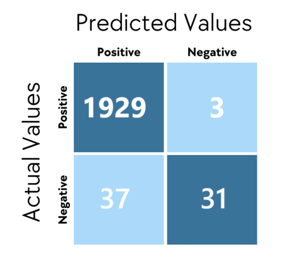

Artifact 4
Predictive Maintenance Model for Equipment Failure Risk
This project applies machine learning to a predictive maintenance problem using the AI4I 2020 dataset. The goal was to predict whether a machine would fail based on operational and wear related variables such as air temperature, process temperature, rotational speed, torque, tool wear, and machine type.
Project Overview
Predictive maintenance is an important real world application of machine learning in engineering and manufacturing. Instead of waiting for a machine to fail, companies can use data to estimate risk earlier and make more informed maintenance decisions. In this project, I used the AI4I 2020 Predictive Maintenance Dataset to explore whether machine failure could be predicted from measurable operating conditions and wear indicators.
The dataset contains 10,000 observations and includes features such as air temperature, process temperature, rotational speed, torque, tool wear, and product type. I built a Random Forest classification model and evaluated it using accuracy, ROC AUC, recall, and the confusion matrix.
Tools and Methods
- Python
- Pandas
- Scikit learn
- Matplotlib
- Random Forest Classifier
- Classification metrics and feature importance analysis
Key Results
Accuracy: 0.98
ROC AUC: 0.963
Class 1 precision: 0.91
Class 1 recall: 0.46
Confusion matrix:

The confusion matrix shows that the model correctly identified most non failure cases, but it still missed a meaningful number of actual failures. This is important in predictive maintenance because missed failures can lead to unplanned downtime or equipment damage.
Feature Importance

The most influential variables were rotational speed, torque, and tool wear, followed by air temperature and process temperature. These findings are meaningful from an engineering perspective because they reflect operating load, mechanical stress, and wear related conditions.
What I Learned
This project helped me understand that strong overall accuracy does not always mean a model is fully suitable for the real decision context. In predictive maintenance, missing true failures may be more costly than issuing false alarms. Because of that, evaluation must go beyond accuracy alone and include recall, ROC AUC, and the confusion matrix.
Limitations and Future Improvement
One limitation of the current model is class imbalance, since failure cases are much fewer than non failure cases. A useful next step would be to improve recall for the failure class by using class weighting, resampling methods, or threshold tuning. Future work could also compare additional models and build a simple dashboard for maintenance alerts.
Skills Demonstrated
- Data preprocessing
- Classification modeling
- Model evaluation
- Feature importance interpretation
- Engineering and business insight